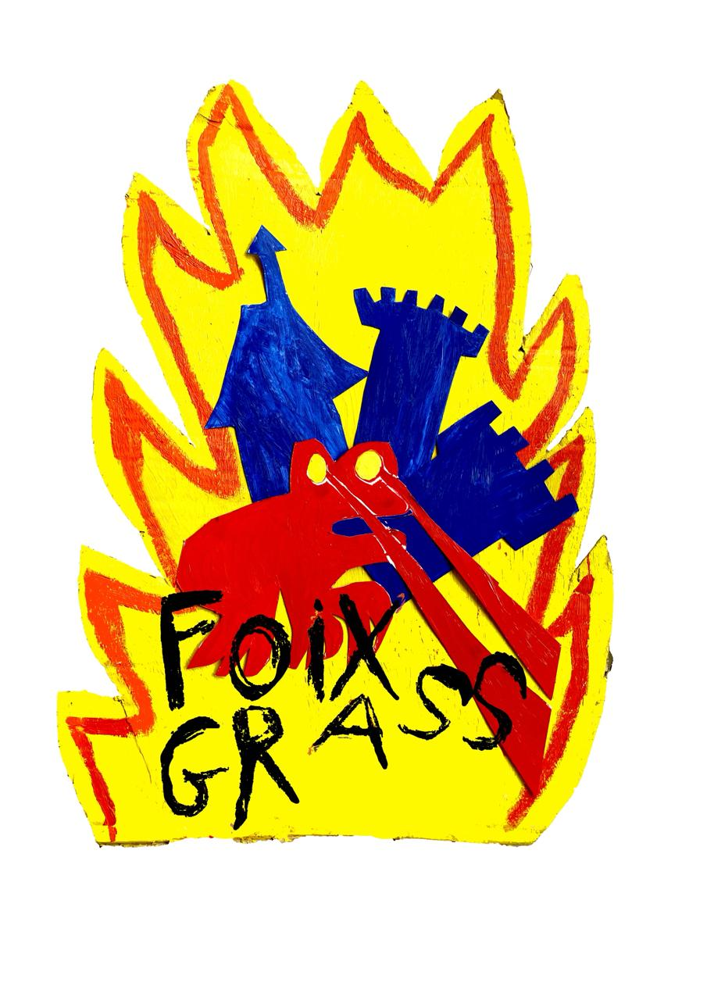
FoixGrass
Festival de Bluegrass
📍 Ganac, Ariège (09) — 20 · 21 · 22 · 23 Août 2026
Quatre jours de musique trad américaine au pied des Pyrénées — bluegrass, old-time, cajun et country dans le village de Ganac, en plein cœur de l'Ariège.
Avec le soutien de
Nos Artistes
Lineup 2026
↓ Cliquez sur une affiche pour découvrir l'artiste ↓
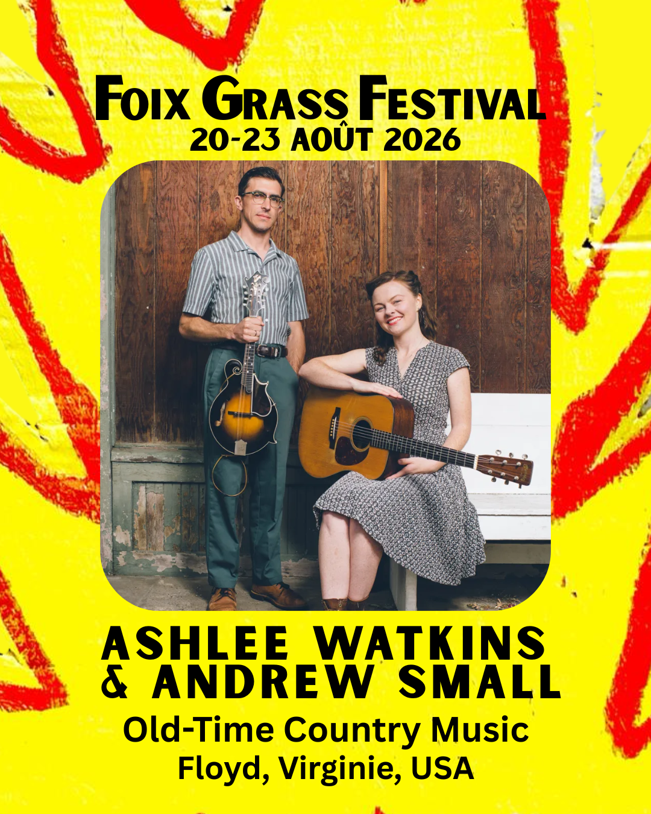
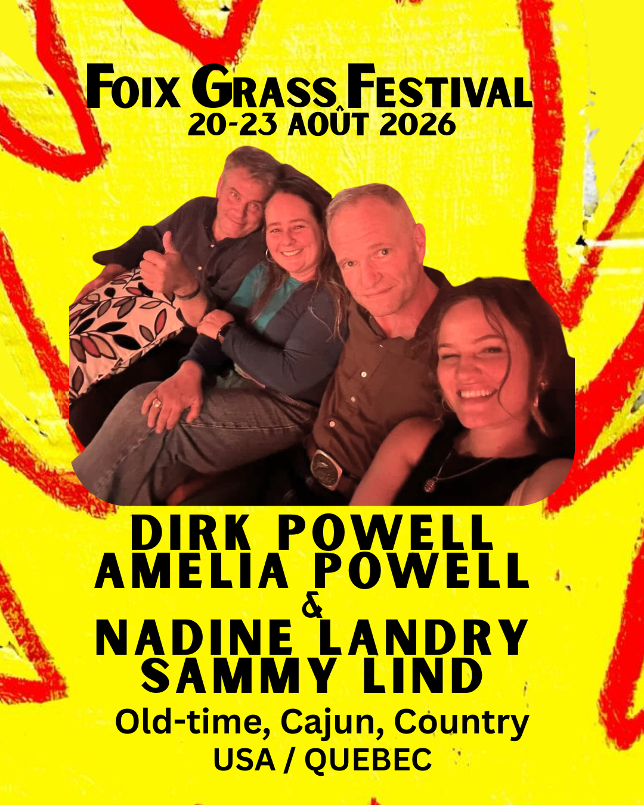
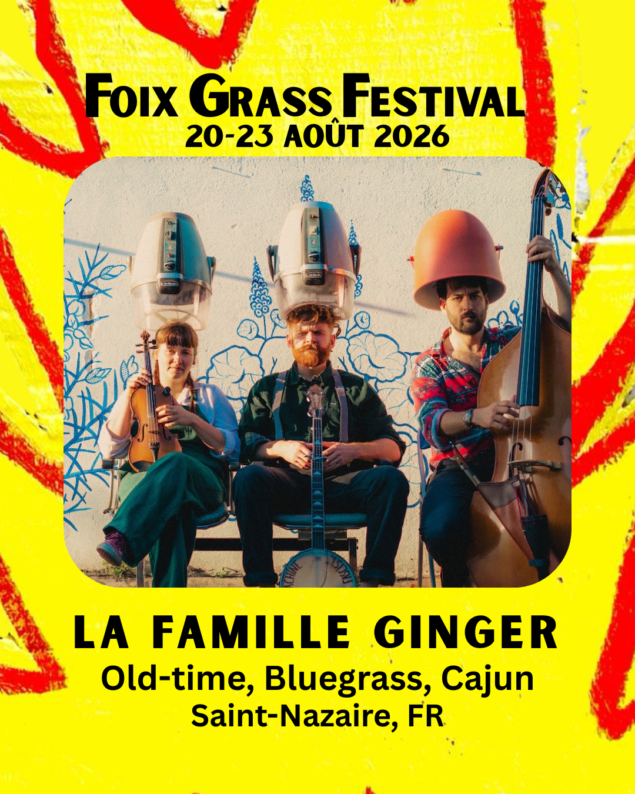

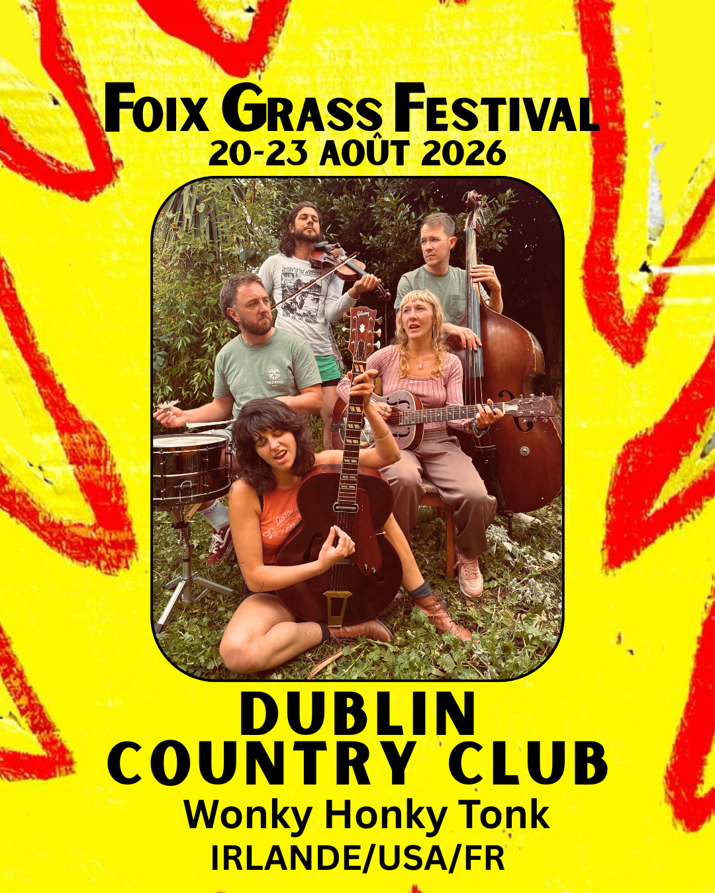
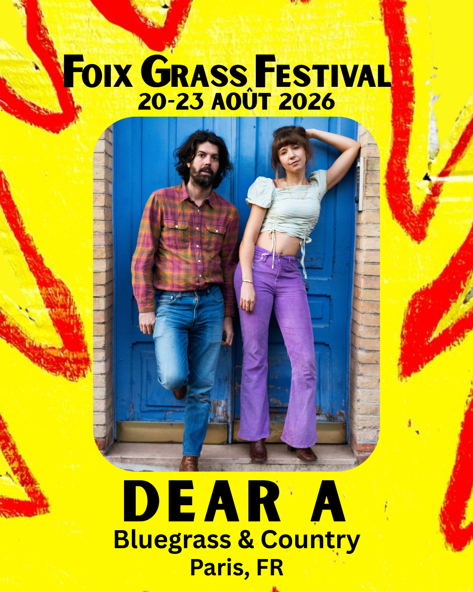
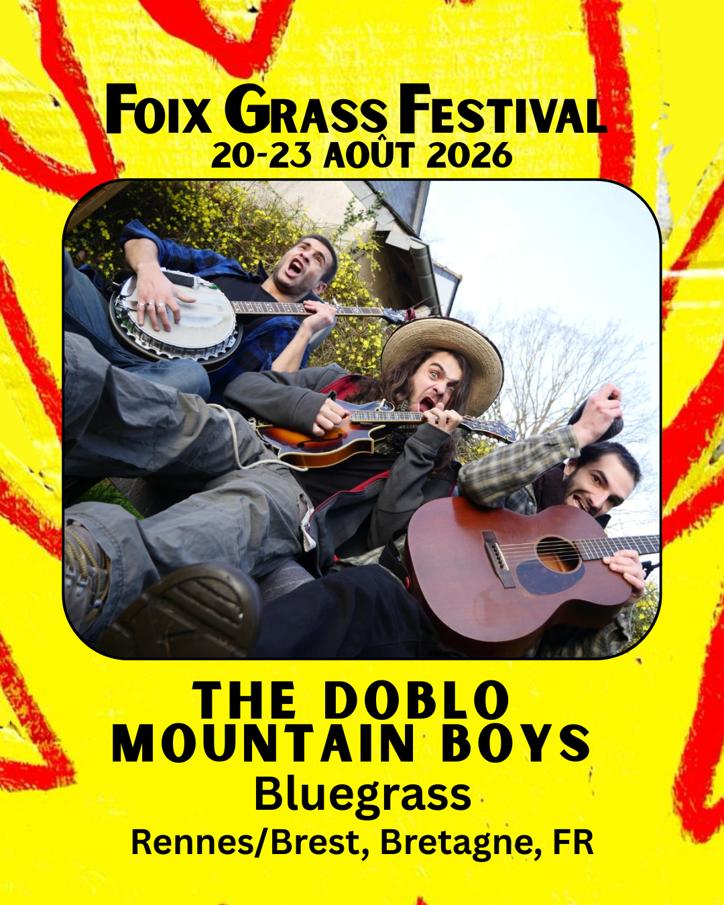
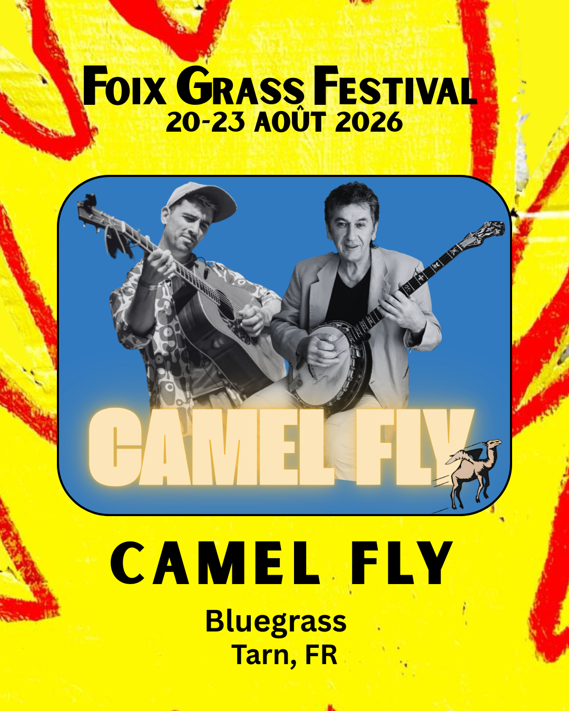
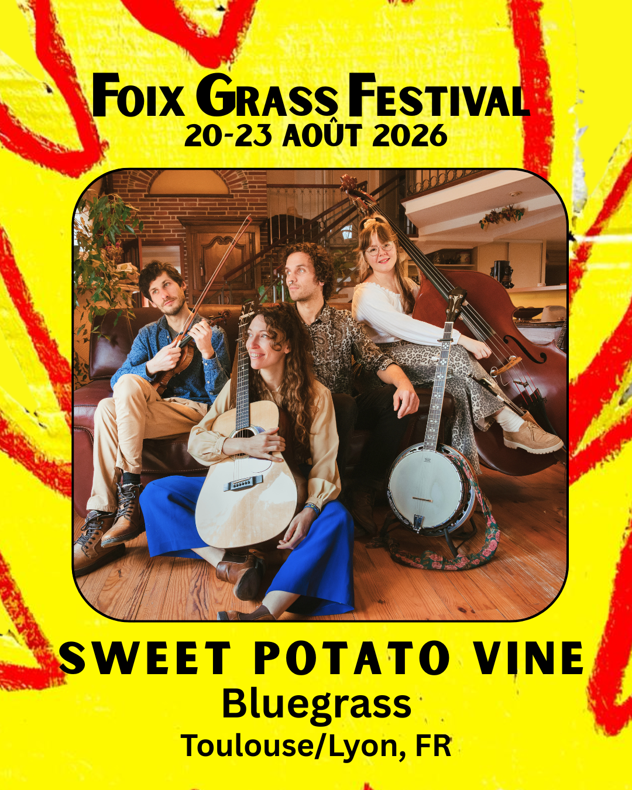
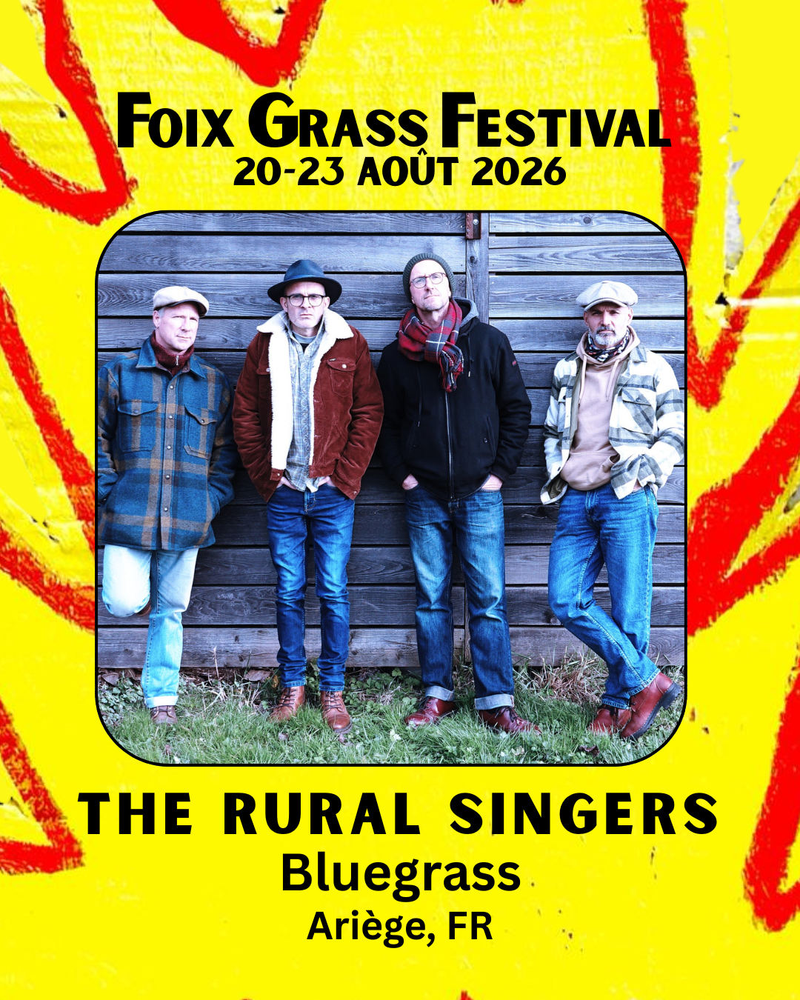
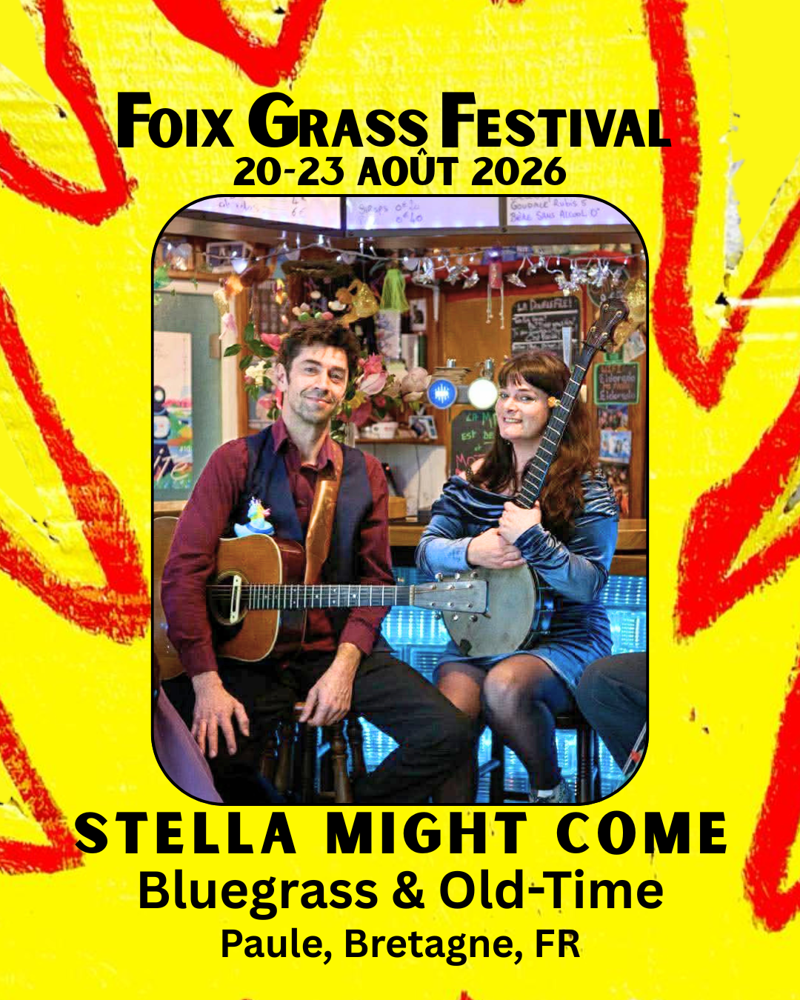
Ashlee Watkins & Andrew Small
Bluegrass · Old-Time Country Music
Floyd, Virginia · USADuo installé à Floyd, Virginie, au cœur des Blue Ridge Mountains. Ashlee Watkins (originaire d'Australie) et Andrew Small (multi-instrumentiste primé — fiddle, mandoline, banjo) portent ensemble une musique trad américaine d'une authenticité rare, profondément ancrée dans la tradition des Appalaches. Ils animent le Floyd Radio Show au Floyd Country Store et se sont produits au Carter Family Fold, à MerleFest et aux Barns at Wolf Trap.
Écoutez-les
La Famille Ginger
Bluegrass · Old-Time · Folk
FranceLa Famille Ginger est une formation française qui mêle bluegrass, old-time et folk avec une énergie communicative et une authenticité rare. Leur musique puise aux sources des traditions américaines et britanniques pour les faire résonner au cœur de l'Europe.
Écoutez-les
Dirk & Amélia Powell · Nadine Landry & Sammy Lind
Old-Time · Cajun
Louisiane · USA / Canada
Dirk et Amélia Powell forment un duo père-fille enraciné dans deux grandes traditions américaines : les bayous cajuns de Louisiane et les montagnes du Kentucky. Le grand-père d'Amélia, Dewey Balfa, était l'une des figures majeures de la musique cajun. Dirk, lui, a appris le banjo, le violon et la guitare auprès de son propre grand-père, J.C. Hay. Considéré depuis des décennies comme un « musicien parmi les musiciens », il a tourné avec Joan Baez, Eric Clapton, Loretta Lynn et Rhiannon Giddens. Amélia apporte une voix pleine d'émotion et un jeu de guitare énergique. Ensemble, ils interprètent l'héritage de leur famille avec confiance, humour et amour.
Nadine Landry et Sammy Lind naviguent entre la musique traditionnelle des Appalaches, les bals cajuns du sud-ouest de la Louisiane, et les chansons honky-tonk des années 1950. Ils vivent dans l'est du Québec et se produisent partout dans le monde, en duo ou avec leurs groupes Foghorn Stringband et Cajun Country Revival.
Pour FoixGrass 2026, ces deux duos exceptionnels se réunissent pour former un seul super-groupe — une rencontre inédite entre Louisiane, Kentucky et Québec, sur la scène de Ganac.
Écoutez-les
Baked Beans
Bluegrass · Roots
Pays-BasLes Baked Beans viennent tout droit des Pays-Bas et joueront en duo banjo / guitare et voix avec leur énergie habituelle. Du bluegrass roots et énergique, qui fait bouger les pieds et sourire les oreilles — une formule simple et redoutablement efficace.
Écoutez-les
Rural Singers
Bluegrass
Ariège, FranceGroupe ariégeois avec guitare, mandoline, harmonica et contrebasse, les Rural Singers mettent l'ambiance partout où ils passent. Un set composé de classiques du bluegrass, des protest-songs folk du début du 20e siècle et des compositions originales. Une touche punk-rock s'ajoute au bluegrass traditionnel pour donner à l'ensemble une superbe énergie et une patte particulière à ce groupe.
Écoutez-les
Stella Might Come
Bluegrass · Old-Time · Folk
France
Duo bluegrass, old-time et folk composé de Danielle Titley à la guitare et au banjo, et de François Verguet à la guitare. Ce nouveau groupe est à l'origine un quartet, mais sera présent en duo à FoixGrass.
Danielle Titley a écumé les scènes bluegrass françaises avec le Jack Danielle String Band et lance désormais ce nouveau projet.
Camel Fly
Bluegrass
Tarn, FranceCamel Fly est le tout nouveau projet des virtuoses Damien Mélich (guitare) et Fred Simon (banjo). Ils proposent un bluegrass moderne inspiré fortement de Béla Fleck et mêlé d'influences jazz. Basés dans le Tarn, ils seront en duo sur le festival.
Écoutez-les
Sweet Potato Vine
Bluegrass · Folk · Old-Time
France
Sweet Potato Vine est un groupe festif et coloré qui s'inspire des racines profondes de la musique Folk Américaine & Old Time tout en ajoutant une touche supplémentaire de fraîcheur et de fun, incluant guitare, banjo, contrebasse, violon et voix en harmonies.
Lineup : Noémie Charmetant (contrebasse · Lyon), Jake Braunecker (guitare/banjo), Léa Desplat (guitare & chant), Maël Mesurolle (violon).
Écoutez-les
Doblo Mountain Boys
Bluegrass · Old-Time
Rennes, France
Originaire de Rennes et composé de Félix Masson (mandoline, flûtes, chant), Michael Babaz (banjo) et Olivier Genel (guitare), ce groupe joyeux et soudé pratique une musique acoustique d'origine américaine, aux influences irlandaises.
Les trois membres se rencontrent en se croisant entre la Bretagne et la région parisienne et jouent ensemble de manière informelle depuis maintenant presque une décennie. Mais c'est en 2018 que le trio décide de se rassembler sous un nom de groupe et d'explorer les voies du Bluegrass, ce qu'ils appellent leur « Quête de l'Ultime Vitesse », allant chercher la tradition chez les anciens de cette musique comme chez les instrumentistes de leur âge (et internet). Après quelques années de travail acharné en colocation, de jams en tournées, de rencontres en collaborations, les membres se trouvent à jouer dans d'autres formations similaires mais conservent avec ce groupe une alchimie et une complicité exceptionnelles.
Écoutez-les
Dublin Country Club
Country · Honky Tonk
Dublin, Irlande
Né dans l'arrière-pays sauvage et indompté de Dublin, coincé entre une ruelle sombre et votre friterie préférée, le Dublin Country Club (DCC) a vu le jour par hasard : des amis ont formé un groupe par inadvertance, alors qu'ils tentaient tant bien que mal de commander des pintes après la fermeture. Ce qui a commencé par quelques sessions endiablées s'est rapidement transformé en un rodéo musical alimenté par des cris de « yee-haw ».
Avec une lineup tournant de musiciens marginaux, de souriants et, parfois, de virtuoses du washboard et du triangle, le DCC mélange des sons du monde entier avec une touche country et un clin d'œil.
Leur quartier général est l'Arthur's Pub sur Thomas Street, où chaque mardi est un « Honky Tonk Tuesday ». le DCC est lié à ce rassemblement hebdomadaire bruyant, rempli de riffs endiablés, d'harmonies qui frappent comme un shot de whisky, et de rythmes de train suffisants pour faire avancer une véritable locomotive. Qu'ils fassent fondre les cœurs, cassent des cordes ou volent accidentellement du bétail, le DCC est là pour une seule chose : faire hurler le « yee-haw » et maintenir le chaos country dangereusement vivant.
In English
Born in the wild, untamed outback of Dublin, squeezed between the dodgy laneway and your favourite greasy chipper, Dublin Country Club (DCC) stumbled into existence when a group of friends accidentally formed a band while fumbling to order pints after last call. What began as a few rowdy seisiúns quickly spiralled into a yee-haw-fuelled musical rodeo.
With a rotating cast of misfit pickers, grinners, and occasional washboard and triangle virtuosos, DCC wrangles together global sounds with a country kick and a wink.
Their spiritual headquarters, Arthur's Pub on Thomas Street, where each Tuesday is a Honky Tonk Tuesday, the DCC are bound to a ritualistic raucous hoedown packed with blistering licks, harmonies that hit like a whiskey shot, and enough train rhythms to summon an actual locomotive. Whether they're melting hearts, breaking strings, or accidentally stealing livestock, DCC is here for one thing: to yee your haw and keep the country chaos dangerously alive.
Écoutez-les
Dear A.
Country · Bluegrass
FranceDear A. explore un répertoire nord-américain qui invite au voyage à travers les époques. Des ballades old-time à la country music, sans oublier le bluegrass, le duo interprète ces musiques dans leur forme la plus authentique : deux voix, deux guitares, et une alchimie sincère. Les timbres s'entrelacent, alternant douceur et énergie, comme une caresse portée par les harmonies délicates d'Adèle et Arthur.
Écoutez-les
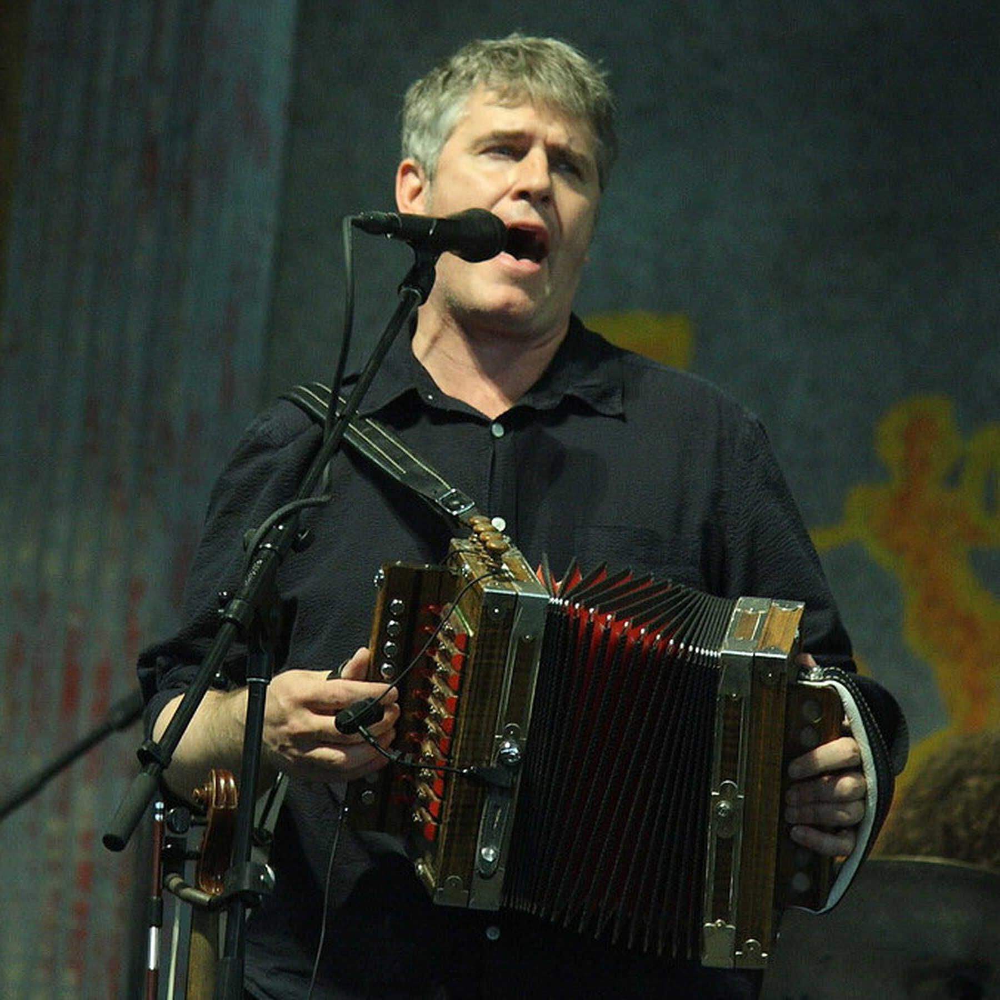
Accordéon Cajun
avec
Dirk Powell
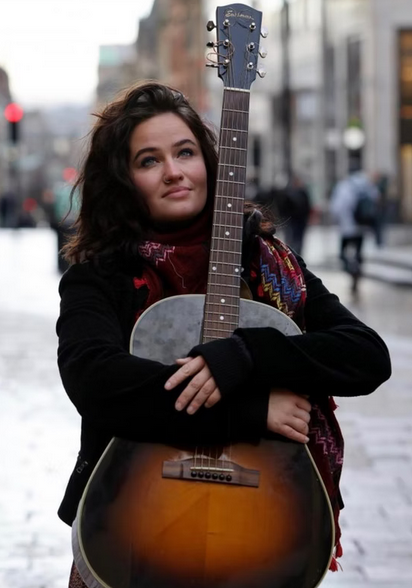
Guitare Old-Time & Cajun
avec
Amélia Powell
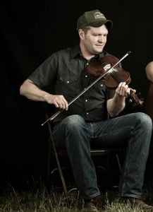
Fiddle Old-Time
avec
Sammy Lind
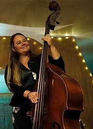
Contrebasse
avec
Nadine Landry
C'est elle qui a donné son nom au fameux micro « Nadine » de Ear Trumpet Labs.
🎸 D'autres masterclasses à venir
Planning complet et billetterie ouvrent bientôt.
Restez connectés pour ne rien manquer !
Faire un Don
FoixGrass est une première édition portée par une association locale, sans trésorerie de départ. Sono, lumières, hébergement, assurances, signalétique, nourriture, boissons, gobelets… les frais s'accumulent bien avant que la billetterie ne rentre. Chaque don, même modeste, compte vraiment.
Paiement sécurisé via HelloAsso · 100% de votre don va au festival
Si le formulaire ne s'affiche pas (Samsung Internet, mode privé…), utilisez le bouton ci-dessus.
Tout ce qu'il faut savoir
Infos Pratiques
Août 2026
Ganac, Ariège (09)
Route de Foix — D117
Country
🏕 Hébergement
Un camping rustique est en cours d'organisation sur le site du festival — restez connectés pour les détails. Si vous préférez un peu de confort, les campings et gîtes des alentours sont à votre disposition.
Pensez à réserver à l'avance — l'Ariège en août, c'est très demandé !
Camping Municipal de Cos
2 Route de la Plane de Caussou, 09000 Cos
📞 06 71 18 10 38
🌐 camping-municipal-cos09.fr
Camping La Roucateille
15 rue du Pradal, 09330 Montgaillard
📞 05 61 64 05 92
📧 info@roucateille.com
🌐 camping-roucateille.com
Camping du Lac — Foix
Quartier Labarre, 09000 Foix
🌐 vap-camping.fr
Réserver sa place
Billetterie
Bientôt en vente — dès la publication du programme
Pass 1 Jour
18 € / 12 €
plein tarif / réduit & Ariège
Masterclasses (1h30)
20 €
tarif unique
Tarif réduit sans justificatif — accessible à toute personne qui en ressent le besoin.
Paiement sécurisé via HelloAsso